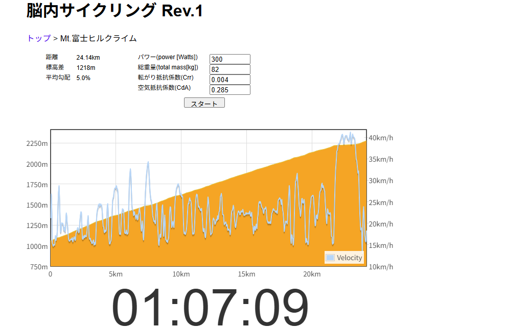

300Wでも足りない。
だから練習が面白くなった
最近の私の当面の目標は、ローラーで1時間300Wを回せるようになること。今の自分から見ると、これはかなり大きな目標である。SST20分×2もまだ毎回きれいに完遂できるわけではないし、VO2 3分×4本も4本目でえづくくらいきつかった。
それでも、少しずつできないことを潰していけば、いつか1時間300Wに近づけるかもしれない。そんなことを考えていた。ところが、富士ヒルのシミュレーションをしてみたら少し現実を見た。300Wでも、富士ヒルゴールドには届かなかった。

全部読むのが面倒な人向けまとめ
- 脳内サイクリング Rev.1で富士ヒルを300W、総重量82kgでシミュレーションした。
- 結果は1:07:09。ゴールド目安の65分切りには約2分9秒届かなかった。
- ただし本番は集団走行の恩恵もあるので、この数字だけで悲観しすぎる必要はない。
- 300Wでも足りないが、絶望ではなく「やることが増えた」という感覚だった。
- 直近の敵はSST20分×2と、VO2 3分×4本の4本目。
- まずは画面上の300Wではなく、実際に踏める300Wを作っていく。
脳内サイクリングで試してみた
今回使ったのは、脳内サイクリング Rev.1というシミュレーションサイト。Mt.富士ヒルクライムの条件を入れて、300Wで走ったらどうなるか試してみた。もちろんシミュレーションなので絶対ではない。風、集団、当日の体調、計測差、いろいろある。ただ、現在地を見るには十分すぎるくらい現実的な数字が出てきた。
- コースMt.富士ヒルクライム
- パワー300W
- 総重量82kg（体重75kg + バイク・装備・ボトルなど7kg）
- Crr / CdA0.004 / 0.285
- 結果1:07:09
富士ヒルのゴールドは65分切りが目安なので、約2分9秒足りない。300Wでも足りない。なかなか厳しい。今の私にとって、1時間300Wはかなり大きな目標である。それなのに、シミュレーション上ではその300Wでもゴールドには届かない。
ただし、これは一人で淡々と走る前提に近い数字でもある。大会本番なら前後に人がいて、場所によっては集団走行の恩恵もある。もちろん富士ヒルは登りなので平坦レースほど楽になるわけではないが、完全な単独走のシミュレーションだけ見て「はい終了」と悲観しすぎる必要もない。
つまり、1時間300Wはゴールではなく通過点なのかもしれない。ここで一回、現実を見た。でも同時に、本番には本番の助けもある。現実、わりと容赦がないが、逃げ道が全部ふさがっているわけでもない。
でも300Wが無意味なわけではない
300Wでもゴールドに届かない。そう聞くと少し絶望っぽい。でも、300Wが無意味なわけではない。むしろ、まず300Wを現実にしないと、その先の話もできない。
今の私は、まだ1時間300Wを回せる状態ではない。だからまずはそこを目指す。その上で富士ヒルゴールドを考えるなら、さらにその先も必要になる。こう考えると、やることが増えただけである。いや、増えすぎではある。でも嫌な感じではない。
目標が遠い方が、途中の階段を作りやすい。300Wでも足りない。じゃあ、まず300Wを通過点にする。そう考えると、少し面白くなってきた。
現在地を数字で見る
今の体重は75kg。FTP設定は275W。75kg換算で見ると、FTP275Wは3.67W/kg、300Wは4.00W/kg、350Wは4.67W/kgになる。300Wでも十分に大きい。350Wは、正直かなり遠い。
- FTP設定275W / 3.67W/kg
- 300W4.00W/kg
- 350W4.67W/kg
350Wという数字は、冗談半分で言った数字である。今すぐ現実的に狙う数字ではないし、短期目標として見るには大きすぎる。でも、遠くに見えている山としては面白い。300Wの先に310W、320W、330Wがあって、さらにその先に350Wがある。そうやって段階に分ければ、今日やることは見えてくる。
直近の敵はSST20分×2
今の直近の敵は、まずSST20分×2。FTP設定275Wの場合、SSTはだいたい242〜259Wくらい。この前のローラーでは、1本目は20分248Wでできた。でも2本目は20分を狙ったものの、残り5分で我慢できなくなって15分254Wで終了した。
つまり、20分×2はまだきれいにできていない。でも、これがちょうどいい。できていないから、次の目標になる。まずはSST20分×2を安定して完遂する。それができたら、次は少し強度を上げるか、30分走へ伸ばす。
1時間300Wにいきなり飛ぶのではなく、まずは20分をそろえる。地味だけど、この地味な積み重ねが必要なのだと思う。派手な近道は今のところ見当たらない。残念。

もう一つの敵はVO2 3分×4本の4本目
もう一つの直近の敵は、VO2 3分×4本の4本目。このメニューは、始める前は正直もう少し楽にできると思っていた。3分×4本。数字だけ見ると、何とかなるように見える。でも実際は、4本目でえづくくらいきつかった。
- 1本目333W
- 2本目336W
- 3本目327W
- 4本目317W
1〜3本目はかなり良かった。でも4本目で落ちた。完全に崩壊したわけではないが、きれいにそろったとも言えない。ここが今の課題である。
次は4本目をもう少しきれいに踏みたい。325W以上でそろえる。あるいは、最初から少し抑えて4本を安定させる。できなかったところが見えると、次にやることが分かる。これはかなり楽しい。
段階的にステップアップする
いきなりFTP350Wを目指すのは現実的ではない。なので段階に分ける。今考えているステップはこんな感じだ。
- 1SST 20分×2を安定して完遂
- 2VO2 3分×4本の4本目をきれいに揃える
- 3FTP付近 15分×2を安定
- 430分 285〜300W
- 545分 285〜295W
- 660分 290〜300W
- 7FTP310〜320Wを狙う
- 8その先で330W、350Wを考える
もちろん、この通りに一直線に進むとは限らない。調子が良い日もあれば、心拍が持たない日もある。お尻が痛くて自転車に乗れない日もある。雨で外に出られずローラーになる日もある。でも大きな目標を小さく分けると、今日やることは見えてくる。
SSTを積む。VO2をそろえる。FTP付近の時間を伸ばす。30分、45分、60分と踏める時間を増やす。これなら、遠い目標も少し現実的に見える。

300Wでも足りない。だから面白い
300Wでも富士ヒルゴールドに届かない。これは、かなり厳しい現実だった。でも不思議と嫌な感じはしなかった。むしろ、やることが増えた気がした。
できることを確認する練習より、できないことを少しずつできるようにする練習の方が楽しい。SST20分×2ができないなら、まず20分＋15分。VO2の4本目が落ちるなら、次はもう少し粘る。1時間300Wが遠いなら、まず30分から伸ばす。
できないことが見える。つまり、次にやることが見える。これはかなり大事だと思う。
今日やってみて思ったこと
富士ヒルゴールドは遠い。300Wでも届かない。1時間300Wもまだできない。SST20分×2もまだ完全ではない。VO2 3分×4本も、4本目で現実を見る。FTP350Wなんて、今は冗談半分の大きな数字である。
でも、それでいい。遠いからこそ段階に分ける意味がある。できないことがあるから練習になる。今日できないことを、次は少しだけできるようにする。
SSTを1本から2本へ。VO2の4本目を少しでも揃える。30分、45分、60分と踏める時間を伸ばす。その積み重ねで、300Wを通過点にしていく。
300Wでも足りない。だから、練習が面白くなった。
自分用メモ
- 使用サイト脳内サイクリング Rev.1
- コースMt.富士ヒルクライム
- 入力パワー300W
- 総重量82kg
- 体重75kg
- バイク・装備など7kg想定
- Crr / CdA0.004 / 0.285
- 結果1:07:09
- 不足65分切りまで約2分9秒
関連記事
記事に出てくるVO2練
ローラー練習 / 2026.06.21
VO2ローラーで4本目に撃沈。でも9分テンポは踏めた
雨の日にRNC7とGT-ROLLER Q1.1でVO2 3分×4本。1〜3本目は狙い通り、4本目は317Wまで落ちた日の記録です。
記事に出てくるSST練
ローラー練習 / 2026.06.19
雨なのでローラー。SST2本目で心拍が持たなかった日
SST20分×2を狙って、1本目は20分248W、2本目は15分254W。脚ではなく心拍と呼吸が先に来た日です。
 直近の敵・その後
ローラー練習 / 2026.06.25
SST20分×2。ローラーで250W台を崩さず踏めた日
直近の敵・その後
ローラー練習 / 2026.06.25
SST20分×2。ローラーで250W台を崩さず踏めた日
この記事で「直近の敵」だったSST20分×2を、1本目255W・2本目253Wでそろえて完遂した続報です。